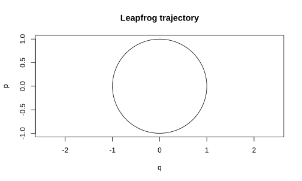
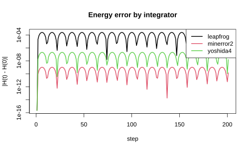

SIMP integrates Hamiltonian systems and builds the Hamiltonian Monte
Carlo proposals that run on them. A Hamiltonian
H(q, p) = U(q) + K(p) pairs a position q with
a momentum p; its flow conserves energy. A
symplectic integrator preserves the geometric structure of that
flow, so it conserves a nearby energy over long trajectories instead of
drifting. That property is what makes the trajectory usable as an MCMC
proposal.
The integrators
Each integrator is a splitting scheme: an alternating sequence of position and momentum updates whose coefficients define the method.
simp_schemes()
#> integrator order gradient_evals
#> 1 leapfrog 2 1
#> 2 minerror2 2 2
#> 3 yoshida4 4 3
#> 4 yoshida6 6 9
#> 5 yoshida8 8 27leapfrog is the order-two workhorse.
minerror2 is a two-stage scheme whose coefficient is tuned
to cancel the leading energy error on a Gaussian target. The Yoshida
members are generated from leapfrog by a single triple-jump composition,
raising the order by two at each step. gradient_evals is
the cost per step along a trajectory.
Integrating a trajectory
Take a unit Gaussian target, U(q) = 0.5 q'q, so the
force is -q and the gradient of the potential is
grad_U(q) = q. Starting on the unit circle in phase space,
the exact flow is a rotation.
grad_U <- function(q) q
out <- simp_integrate(
q0 = c(1, 0), p0 = c(0, 1), grad_U = grad_U,
eps = 0.1, n_steps = 200, integrator = "leapfrog", trajectory = TRUE)
plot(out$q_path[, 1], out$p_path[, 1], type = "l", asp = 1,
xlab = "q", ylab = "p", main = "Leapfrog trajectory")
Energy conservation
Pass U to record the total energy along the path. A
symplectic integrator keeps it in a bounded band. The two-stage
minerror2 cancels the leading error term on this Gaussian
target, so its energy error sits far below leapfrog’s at the same step
size, at two gradient evaluations per step.
U <- function(q) 0.5 * sum(q^2)
energy_err <- function(scheme) {
o <- simp_integrate(c(1, 0), c(0, 1), grad_U, eps = 0.3, n_steps = 200,
integrator = scheme, trajectory = TRUE, U = U)
pmax(abs(o$energy - o$energy[1]), .Machine$double.eps)
}
schemes <- c("leapfrog", "minerror2", "yoshida4")
errs <- lapply(schemes, energy_err)
matplot(seq_len(201), do.call(cbind, errs), type = "l", lty = 1, lwd = 2,
log = "y", xlab = "step", ylab = "|H(t) - H(0)|",
main = "Energy error by integrator")
legend("topright", legend = schemes, col = seq_along(schemes), lty = 1, lwd = 2)
Hamiltonian Monte Carlo
simp_hmc() draws each proposal by integrating the
target’s Hamiltonian flow and accepting it by the Metropolis rule on the
energy. The integrator is a free choice, so any scheme above can drive
the sampler.
Sigma <- matrix(c(1, 0.8, 0.8, 1), 2)
P <- solve(Sigma)
U_hmc <- function(q) 0.5 * as.numeric(t(q) %*% P %*% q)
grad_hmc <- function(q) as.numeric(P %*% q)
fit <- simp_hmc(U_hmc, grad_hmc, init = c(0, 0), n_iter = 2000, eps = 0.25,
n_steps = 16, warmup = 500, integrator = "minerror2")
colMeans(fit$draws) # target mean is c(0, 0)
#> [1] -0.0005825939 -0.0005670790
cov(fit$draws) # target covariance is Sigma
#> [,1] [,2]
#> [1,] 0.6909171 0.4657506
#> [2,] 0.4657506 0.6618505
fit$accept_rate
#> [1] 1Non-separable Hamiltonians
When the kinetic and potential parts do not separate, as in
Riemannian dynamics with a position-dependent mass m(q),
the explicit schemes no longer apply.
simp_integrate_nonsep() uses the generalized (implicit)
leapfrog, which solves its two implicit stages by fixed-point iteration.
Here m(q) = 1 + 0.5 q^2.
m <- function(q) 1 + 0.5 * q^2
H <- function(q, p) 0.5 * p^2 / m(q) + 0.5 * q^2
dHdq <- function(q, p) -0.5 * p^2 * q / m(q)^2 + q
dHdp <- function(q, p) p / m(q)
ns <- simp_integrate_nonsep(
q0 = 1, p0 = 0.5, dH_dq = dHdq, dH_dp = dHdp,
eps = 0.05, n_steps = 400, trajectory = TRUE, H = H)
ns$converged
#> [1] TRUE
range(ns$energy) # bounded: energy is conserved
#> [1] 0.5831680 0.5833571For a separable Hamiltonian the generalized leapfrog reduces to the standard leapfrog, so it is a strict extension of the explicit path.